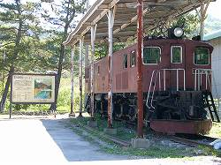

| 上越国境の前線基地・水上機関区の歴史 | |||||||||||||||||||||||||||||||||||||||||||||||||||||||||||||||||||||||||||||||||||||||||||||||||||||||||||||||||||||||||||||||||||||||
| 1、機関庫の必要性 | |||||||||||||||||||||||||||||||||||||||||||||||||||||||||||||||||||||||||||||||||||||||||||||||||||||||||||||||||||||||||||||||||||||||
 水上(みなかみ)機関区の誕生は昭和6年の上越線全通時までさかのぼる。機関区は水上駅北側の隣接地に設置され、機関区廃止後の現在も上越線で運行するD51が使う転車台などが残されている。また、誕生当初は「機関区」ではなく「機関庫」と呼ばれていた。高崎・宮内両サイドから上越国境に向かって工事が始まった上越線は、大正9年11月1日に上越線初の営業運転を開始した「上越南線/宮内～小千谷（開業当初の駅名は東小千谷）」を皮切りに、逐次開通区間を増やしていった。ちなみに、昭和6年の上越線全通開業の日まで、群馬側を「上越南線」・新潟側を「上越北線」という名称で呼んでいた。日本でも有数の豪雪地帯を貫く上越線を建設するにあたり、特に群馬・新潟県境の水上～越後湯沢間の建設工事には大変な労力を要したが、昭和6年9月1日に晴れて全通開業の日を迎えることとなる。これを機に「水上機関庫」が開設された訳だが、同庫が担当する水上～石打間の勾配が連続20‰の勾配である事や、延長約10Kmにも及ぶ「清水トンネル」の排煙問題、さらに、冬場の雪中での厳しい運転環境などが考慮され、当時全盛だった蒸気運転は不向きとされて同区間は開業当初から電気運転をする事とした。そのため、水上駅に発着する全ての列車においてSL⇔ELの付替えをする必要が生じ、峠区間の運転を預かる水上機関庫の存在は建設当初から重要視されていた。豪雪地帯の電気運転の前例がなかった当時、除雪車の運転や除雪で線路脇に積み上げられる雪の量などを考慮し、線路と架線支柱との間隔を通常よりも大きめにしたり、架線の支持方法も特別に検討されたりした。これらは一部の例に過ぎないが、冬場の雪害を考慮した特殊な電化工事になった事を付け加えておく。 |
|||||||||||||||||||||||||||||||||||||||||||||||||||||||||||||||||||||||||||||||||||||||||||||||||||||||||||||||||||||||||||||||||||||||
| 2、機関庫誕生 | |||||||||||||||||||||||||||||||||||||||||||||||||||||||||||||||||||||||||||||||||||||||||||||||||||||||||||||||||||||||||||||||||||||||
| 上越線全通に先立つ昭和6年7月9日に水上機関庫開設準備室が開室し、勾配線区用として純国産で製造されたED16形13両、国産電機の手本とされたアメリカ製のEF51形2両、計15両の電気機関車が配置されて試運転が開始された。続く8月15日、開設準備室が発展消滅するかたちで水上機関庫が正式に開設され、同時に石打機関車駐泊所が開設される。そして、待望となる9月1日の上越線全通の日に営業運転が開始された。 | |||||||||||||||||||||||||||||||||||||||||||||||||||||||||||||||||||||||||||||||||||||||||||||||||||||||||||||||||||||||||||||||||||||||
| 3、雪との闘い | |||||||||||||||||||||||||||||||||||||||||||||||||||||||||||||||||||||||||||||||||||||||||||||||||||||||||||||||||||||||||||||||||||||||
|
華々しく開業を迎えた水上機関庫だったが、日本の鉄道史上、豪雪地帯での電気運転は上越国境が初めての事であり、予想しなかったトラブルに見舞われる事になる。冬将軍の到来とともに、空転防止用の砂撒き器の管が凍結して砂が撒けなくなり空転が続出。その事に起因する主電動機のショート（短絡）事故の頻発や、重連カプラ-に雪が付着した事による絶縁不良、通風器から高圧室に入り込む雪が原因で発生する短絡事故、さらには、トンネル内にあるツララが運転室の窓ガラスに激突・破損して機関士が負傷するという痛ましい事故まで発生した。 これらの対策として、砂撒き器や空気制動管などに電熱器を取り付けて凍結防止策を講じたほか、機器室に侵入する雪に対しては高圧器にシートを被せるとともに通風器の内側から目張りをする事で対処。さらに、ツララ対策として運転室の窓の上に深いヒサシを取り付け、窓ガラスにツララが当たる直前にそれを折るという対策をとった。また、雪の侵入や凍結による汽笛の吹鳴不良を防ぐ目的でホイッスルカバーも取り付けられ、これら「ツララ切り」や「ホイッスルカバー」を装備した機関車は、後に「上越型」と呼ばれるようになった。 |
|||||||||||||||||||||||||||||||||||||||||||||||||||||||||||||||||||||||||||||||||||||||||||||||||||||||||||||||||||||||||||||||||||||||
| 4、上越国境を駆け抜けた機関車達 | |||||||||||||||||||||||||||||||||||||||||||||||||||||||||||||||||||||||||||||||||||||||||||||||||||||||||||||||||||||||||||||||||||||||
|
水上機関庫開設から5年後の昭和11年9月1日、職制改正により水上機関区と改称する。この頃、EF11形機関車が1両配置される。この機関車には電力回生ブレーキが搭載されており、後のEF16形誕生のきっかけになったともいえる機関車である。昭和13年になるとEF10形が新製配置され、ED16形と置き換える格好で次第にその数を増やしていく。EF10形は大戦前後の主力貨物用電機のひとつで、一部は関門トンネル用にステンレス車体になったものもあった。この機関車が水上機関区に配置された期間はそれほど長くなかったが、一時は上越国境の主役になった。昭和17年に開通した関門トンネル用のEF10型機の性能試験を水上機関区が受け持ったという記録があり、この関係で重点的に配置されたのかもしれない（この性能試験は現地の関門トンネルで行われた可能性もある）。また、正確な日付はわからないが、蒸気発生装置を持たない電気機関車牽引列車の客車に冬場の暖房を供給する目的の「蒸気暖房車」も水上機関庫に配置されている。 |
|||||||||||||||||||||||||||||||||||||||||||||||||||||||||||||||||||||||||||||||||||||||||||||||||||||||||||||||||||||||||||||||||||||||
| 5、戦争の影 | |||||||||||||||||||||||||||||||||||||||||||||||||||||||||||||||||||||||||||||||||||||||||||||||||||||||||||||||||||||||||||||||||||||||
| 戦時非常体制が敷かれつつあった昭和19年頃になると、運炭列車の大幅なダイヤ増と、一列車あたりの運炭量を増強する目的で上越線の輸送力が強化され、EF12形重連牽引の1100トン列車の運転が開始される。EF12形は昭和16年から計17両製造され、出力をEF10の1.2倍にあたる1600kWに増強した機関車で、一時は全機が水上機関区に所属していた。続く昭和20年には、EF13形が4両配置される。この機関車は、大戦中に激増する貨物物資の輸送に対処する為に急造された電気機関車で、製造コストや資材等を極力省いて製造されたため、登場当初は凸型の形をしていた。この特異形状の為、機関車前後の出っ張りの部分に収納される事になった一部の電動機部分は、この地区の風雪にさらされて保守が大変だったようである。機関車の性能自体はEF12型とほぼ一緒だった。 終戦後、上越線の重要性を訴える日本はGHQ（連合軍総司令部）の反対を押し切っていちはやく全線電化の工事に着手し、昭和22年10月に完成する。これにともない、高崎～長岡間で電気機関車牽引の直通運転が実施され、水上でのSL⇔ELという機関車交換作業は、次第に本務のELに水上区の補機を連結（または解結）するという作業に様変わりしていく。昭和29年の冬には、水上機関区の機関車を必要としない旅客電車の運転まで上野－石打間で開始されている。 |
|||||||||||||||||||||||||||||||||||||||||||||||||||||||||||||||||||||||||||||||||||||||||||||||||||||||||||||||||||||||||||||||||||||||
| 6、水上機関区の顔「EF16」誕生 | |||||||||||||||||||||||||||||||||||||||||||||||||||||||||||||||||||||||||||||||||||||||||||||||||||||||||||||||||||||||||||||||||||||||
| 少しさかのぼって昭和26年、永きに渡って水上機関区の主力となったEF16形機が誕生する。この機関車は、EF15形に電力回生ブレーキを搭載して勾配線区向けに改造されたもので、奥羽本線の板谷峠や水上機関区に集中配置された。水上機関区に配置され始めたのは昭和30年になってからで、昭和55年にファンに惜しまれつつ引退するまでの25年間に渡り、この機関車は上越線を中心に黙々と働き続けた。その偉業を称え、みなかみ町にある「道の駅・水上町水紀行館」の駐車場の片隅に「EF16 28号機」が静態保存されている（冒頭の画像）。これらのEF16形の全廃は新製されたEF64
1000番台が長岡に大量に配置されたためで、以後、上越線の主役はこの機関車にバトンタッチし、2008年現在も上越線の主力機関車として活躍しているのはご存知の通りである。 |
|||||||||||||||||||||||||||||||||||||||||||||||||||||||||||||||||||||||||||||||||||||||||||||||||||||||||||||||||||||||||||||||||||||||
| 7、転機 | |||||||||||||||||||||||||||||||||||||||||||||||||||||||||||||||||||||||||||||||||||||||||||||||||||||||||||||||||||||||||||||||||||||||
| 昭和22年に上越線が全線電化した事は先に述べたが、これにより、それまで水上～石打間の区間電化区間が受け持ちだった水上機関区の電機機関士達の乗務に、高崎や長岡方面へと乗り入れる乗務が追加新設され、昭和25年頃からそれが本格化していった。その後、特急「とき」の運転開始などで旅客電車の運用が次第に増え続け、昭和45年には水上機関区の機関士に対する電車運転士への転換教育が開始される。同じ頃、電気機関士の一人乗務が開始されており、この事も転換教育のひとつの原因になっているものと思われる。それと、水上機関区は雪と格闘する機関区であったため、多くの除雪車が配置されていた事を忘れてはならない。これらの特殊な車両については資料不足で詳しい事がわからないが、昭和52年に両頭ラッセル式のDE15が水上機関区に配置されていた事実だけ書き添えておく。 | |||||||||||||||||||||||||||||||||||||||||||||||||||||||||||||||||||||||||||||||||||||||||||||||||||||||||||||||||||||||||||||||||||||||
| 8、廃区 | |||||||||||||||||||||||||||||||||||||||||||||||||||||||||||||||||||||||||||||||||||||||||||||||||||||||||||||||||||||||||||||||||||||||
| 廃区のいきさつは民営化を控えた国鉄が大々的に推進した合理化の流れを受けたものであまりいい話ではない。幹線道路の整備や高速道路の延伸と共に急増するトラック輸送に荷物を奪われた国鉄は、上越線内の貨物取り扱い駅を次々と取り扱い廃止にした。その結果、上越線を通過する貨物列車の数は減少の一途をたどる。電車の急増で職場を失いつつあった水上機関区の機関車にとって、本業である貨物列車が減少するというのは死活問題だったに違いない。そして、追いうちをかけるかのように、折からの合理化の波をまともに受けた水上機関区は、民営化を翌年に控えた昭和61年10月31日に廃区になった。 | |||||||||||||||||||||||||||||||||||||||||||||||||||||||||||||||||||||||||||||||||||||||||||||||||||||||||||||||||||||||||||||||||||||||
|
|||||||||||||||||||||||||||||||||||||||||||||||||||||||||||||||||||||||||||||||||||||||||||||||||||||||||||||||||||||||||||||||||||||||
|
|
|||||||||||||||||||||||||||||||||||||||||||||||||||||||||||||||||||||||||||||||||||||||||||||||||||||||||||||||||||||||||||||||||||||||
－水上機関区略史－
－水上機関区・機関車配置履歴－ ※判明分のみ掲載
－水上機関区で活躍した電気機関車－ ED16 EF10 EF11 EF12 EF13 EF15 EF16 EF51 各機関車の詳細は上越線で活躍した旧型電機参照 |
|||||||||||||||||||||||||||||||||||||||||||||||||||||||||||||||||||||||||||||||||||||||||||||||||||||||||||||||||||||||||||||||||||||||
| ↑このページの先頭へ↑ | |||||||||||||||||||||||||||||||||||||||||||||||||||||||||||||||||||||||||||||||||||||||||||||||||||||||||||||||||||||||||||||||||||||||